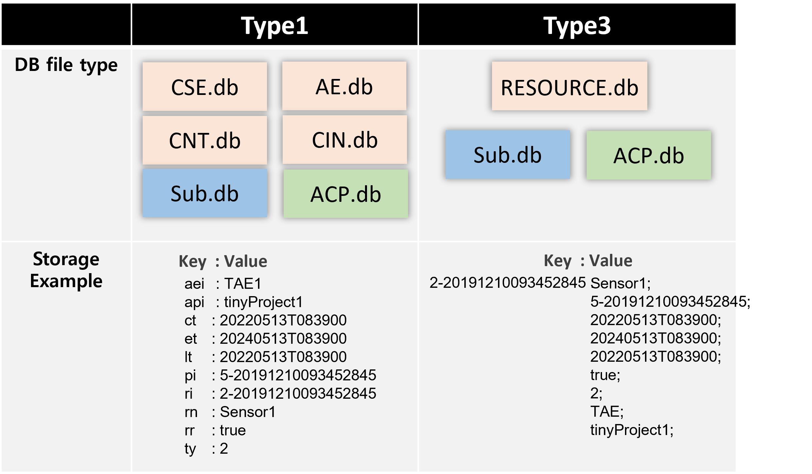

About The TinyIoT
In the case of the existing IoT platform, it was difficult to operate dynamically because it was made up of Java and various functions were included. We developed an tiny IoT platform for device support in C language in accordance with the oneM2M international standard, implemented it to operate efficiently, and displayed the result in the developed resource browser.
Language : C
Resources : ACP(1), AE(2), CNT(3), CIN(4), SUB(23)
Data Structure
Resource Browser
수정중